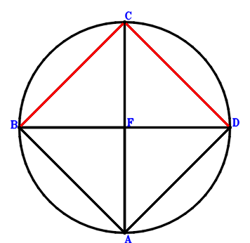
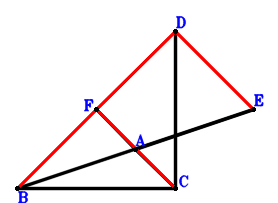
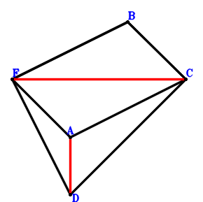
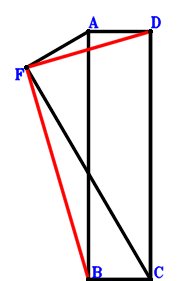
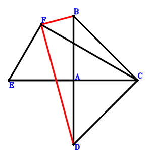

Exercise 14： Let CBAD be a cyclic parallelogram. CA intersects BD at F. Prove that BC⊥CD.

\(\because \) CBAD is a parallelogram \(\therefore \small\overrightarrow{FA}=\small\overrightarrow{FB} - \small\overrightarrow{FC} + \small\overrightarrow{FD}\).\(\because \) CBAD is a cyclic quadrilateral, CA intersects BD at F \( \therefore- \small\overrightarrow{FA} \cdot \small\overrightarrow{FC} + \small\overrightarrow{FB} \cdot \small\overrightarrow{FD}=\small\overrightarrow{FB} \cdot \small\overrightarrow{FD} - \small\overrightarrow{FC} \cdot \left(\small\overrightarrow{FB} - \small\overrightarrow{FC} + \small\overrightarrow{FD}\right)=- \small\overrightarrow{FB} \cdot \small\overrightarrow{FC} + \small\overrightarrow{FB} \cdot \small\overrightarrow{FD} + \small\overrightarrow{FC}^{2} - \small\overrightarrow{FC} \cdot \small\overrightarrow{FD}=0.\)In conclusion, \(\small\overrightarrow{BC} \cdot \small\overrightarrow{DC}=\left(- \small\overrightarrow{FB} + \small\overrightarrow{FC}\right) \cdot \left(\small\overrightarrow{FC} - \small\overrightarrow{FD}\right)=- \small\overrightarrow{FB} \cdot \small\overrightarrow{FC} + \small\overrightarrow{FB} \cdot \small\overrightarrow{FD} + \small\overrightarrow{FC}^{2} - \small\overrightarrow{FC} \cdot \small\overrightarrow{FD}=0\), that is, BC⊥CD.
Exercise 18： Let A be the midpoint of BE and FC. BC⊥CD. Given that B, F, D are collinear and DE//FC, prove that \(BF·FD=DE·FC\).

\(\because \) A is the midpoint of FC \(\therefore \small\overrightarrow{CA}=\dfrac{\small\overrightarrow{CF}}{2}\).\(\because \) A is the midpoint of BE \(\therefore \small\overrightarrow{CE}=2 \small\overrightarrow{CA} - \small\overrightarrow{CB}=- \small\overrightarrow{CB} + \small\overrightarrow{CF}\).\(\because \) BC⊥CD \( \therefore\small\overrightarrow{CB} \cdot \small\overrightarrow{CD}=0.\)In conclusion, \(- \small\overrightarrow{BF} \cdot \small\overrightarrow{DF} + \small\overrightarrow{CF} \cdot \small\overrightarrow{DE}=\small\overrightarrow{CF} \cdot \left(- \small\overrightarrow{CD} + \small\overrightarrow{CE}\right) - \left(- \small\overrightarrow{CB} + \small\overrightarrow{CF}\right) \cdot \left(- \small\overrightarrow{CD} + \small\overrightarrow{CF}\right)=\small\overrightarrow{CF} \cdot \left(- \small\overrightarrow{CB} - \small\overrightarrow{CD} + \small\overrightarrow{CF}\right) - \left(- \small\overrightarrow{CB} + \small\overrightarrow{CF}\right) \cdot \left(- \small\overrightarrow{CD} + \small\overrightarrow{CF}\right)=- \small\overrightarrow{CB} \cdot \small\overrightarrow{CD}=0\)\(\because\) B, F, D are collinear and DE//FC \(\therefore\) \(BF·FD=DE·FC\).
Exercise 32： Let BFAC be a parallelogram. DC⊥CB and DF⊥FB. Prove that AD⊥FC.

\(\because \) BFAC is a parallelogram \(\therefore \small\overrightarrow{CA}=- \small\overrightarrow{CB} + \small\overrightarrow{CF}\).\(\because \) DC⊥CB \(\therefore \small\overrightarrow{CB} \cdot \small\overrightarrow{CD}=0\) . . . . . . \(①\)\(\because \) DF⊥FB \(\therefore \small\overrightarrow{BF} \cdot \small\overrightarrow{DF}=\left(- \small\overrightarrow{CB} + \small\overrightarrow{CF}\right) \cdot \left(- \small\overrightarrow{CD} + \small\overrightarrow{CF}\right)=\small\overrightarrow{CB} \cdot \small\overrightarrow{CD} - \small\overrightarrow{CB} \cdot \small\overrightarrow{CF} - \small\overrightarrow{CD} \cdot \small\overrightarrow{CF} + \small\overrightarrow{CF}^{2}=0\) . . . . . . \(②\)In conclusion, \(\small\overrightarrow{CF} \cdot \small\overrightarrow{DA}=\small\overrightarrow{CF} \cdot \left(\small\overrightarrow{CA} - \small\overrightarrow{CD}\right)=\small\overrightarrow{CF} \cdot \left(- \small\overrightarrow{CB} - \small\overrightarrow{CD} + \small\overrightarrow{CF}\right)=- \small\overrightarrow{CB} \cdot \small\overrightarrow{CF} - \small\overrightarrow{CD} \cdot \small\overrightarrow{CF} + \small\overrightarrow{CF}^{2}=-①+②=0\), that is, AD⊥FC.
Exercise 38： Let ABCD be a rectangle and AF⊥FC. Prove that BF⊥FD.

\(\because \) ABCD is a parallelogram \(\therefore \small\overrightarrow{CA}=\small\overrightarrow{CB} + \small\overrightarrow{CD}\).\(\because \) BC⊥CD \(\therefore \small\overrightarrow{CB} \cdot \small\overrightarrow{CD}=0\) . . . . . . \(①\)\(\because \) AF⊥FC \(\therefore \small\overrightarrow{AF} \cdot \small\overrightarrow{CF}=\small\overrightarrow{CF} \cdot \left(- \small\overrightarrow{CA} + \small\overrightarrow{CF}\right)=\small\overrightarrow{CF} \cdot \left(- \small\overrightarrow{CB} - \small\overrightarrow{CD} + \small\overrightarrow{CF}\right)=- \small\overrightarrow{CB} \cdot \small\overrightarrow{CF} - \small\overrightarrow{CD} \cdot \small\overrightarrow{CF} + \small\overrightarrow{CF}^{2}=0\) . . . . . . \(②\)In conclusion, \(\small\overrightarrow{BF} \cdot \small\overrightarrow{DF}=\left(- \small\overrightarrow{CB} + \small\overrightarrow{CF}\right) \cdot \left(- \small\overrightarrow{CD} + \small\overrightarrow{CF}\right)=\small\overrightarrow{CB} \cdot \small\overrightarrow{CD} - \small\overrightarrow{CB} \cdot \small\overrightarrow{CF} - \small\overrightarrow{CD} \cdot \small\overrightarrow{CF} + \small\overrightarrow{CF}^{2}=①+②=0\), that is, BF⊥FD.
Exercise 40： Let A be the midpoint of BD and EC. BC⊥CD and EF⊥FC. Prove that BF⊥FD.

\(\because \) A is the midpoint of BD \(\therefore \small\overrightarrow{CA}=\dfrac{\small\overrightarrow{CB}}{2} + \dfrac{\small\overrightarrow{CD}}{2}\).\(\because \) A is the midpoint of EC \(\therefore \small\overrightarrow{CE}=2 \small\overrightarrow{CA}=\small\overrightarrow{CB} + \small\overrightarrow{CD}\).\(\because \) BC⊥CD \(\therefore \small\overrightarrow{CB} \cdot \small\overrightarrow{CD}=0\) . . . . . . \(①\)\(\because \) EF⊥FC \(\therefore \small\overrightarrow{CF} \cdot \small\overrightarrow{EF}=\small\overrightarrow{CF} \cdot \left(- \small\overrightarrow{CE} + \small\overrightarrow{CF}\right)=\small\overrightarrow{CF} \cdot \left(- \small\overrightarrow{CB} - \small\overrightarrow{CD} + \small\overrightarrow{CF}\right)=- \small\overrightarrow{CB} \cdot \small\overrightarrow{CF} - \small\overrightarrow{CD} \cdot \small\overrightarrow{CF} + \small\overrightarrow{CF}^{2}=0\) . . . . . . \(②\)In conclusion, \(\small\overrightarrow{BF} \cdot \small\overrightarrow{DF}=\left(- \small\overrightarrow{CB} + \small\overrightarrow{CF}\right) \cdot \left(- \small\overrightarrow{CD} + \small\overrightarrow{CF}\right)=\small\overrightarrow{CB} \cdot \small\overrightarrow{CD} - \small\overrightarrow{CB} \cdot \small\overrightarrow{CF} - \small\overrightarrow{CD} \cdot \small\overrightarrow{CF} + \small\overrightarrow{CF}^{2}=①+②=0\), that is, BF⊥FD.